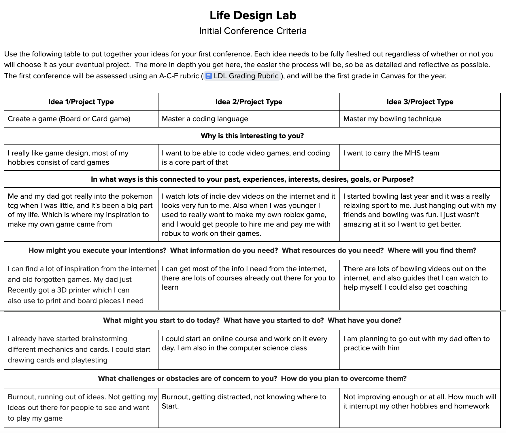
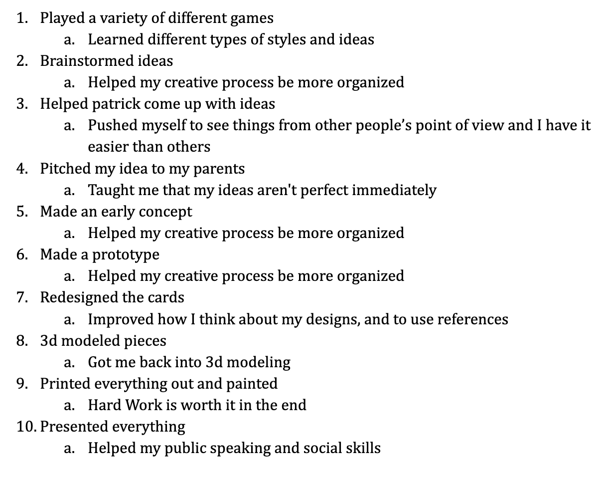
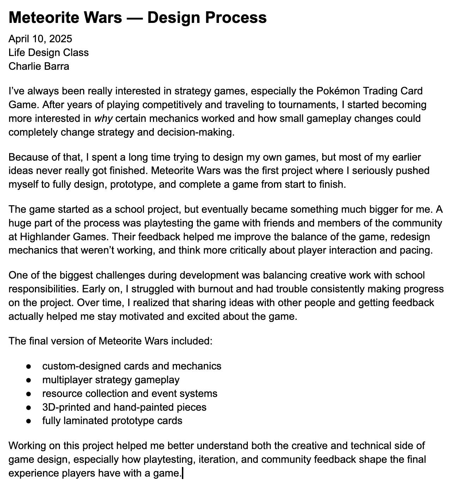
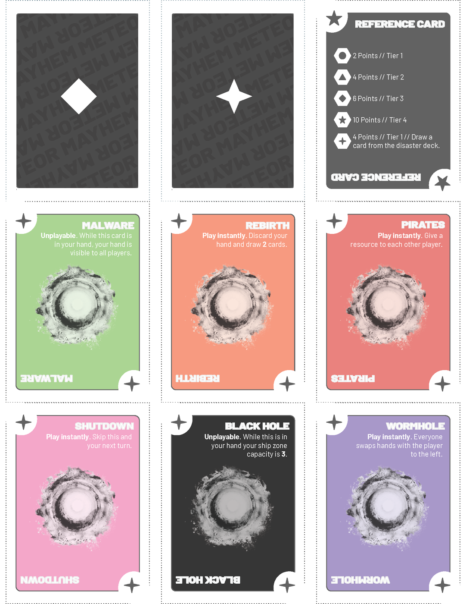
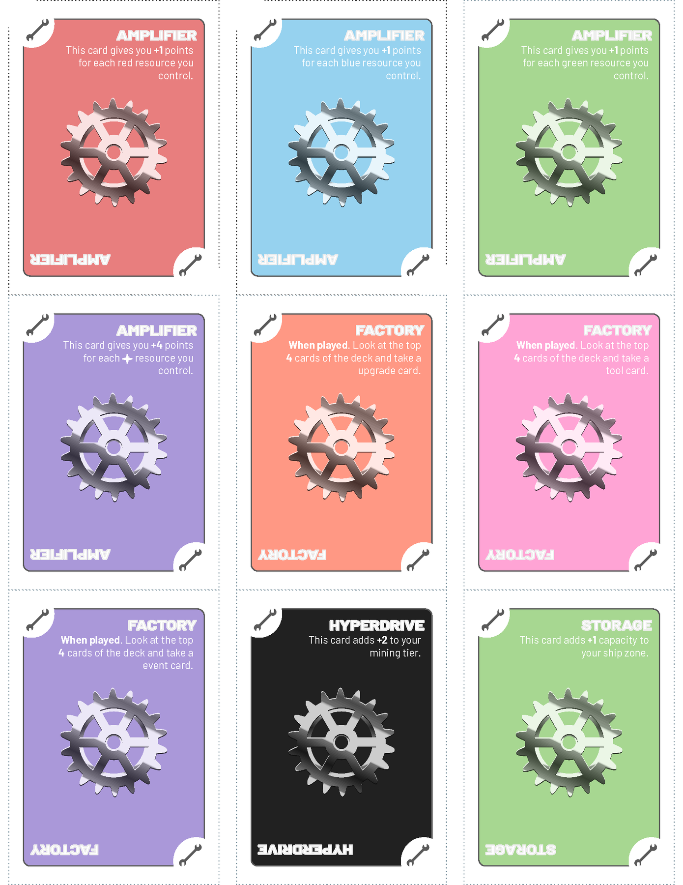
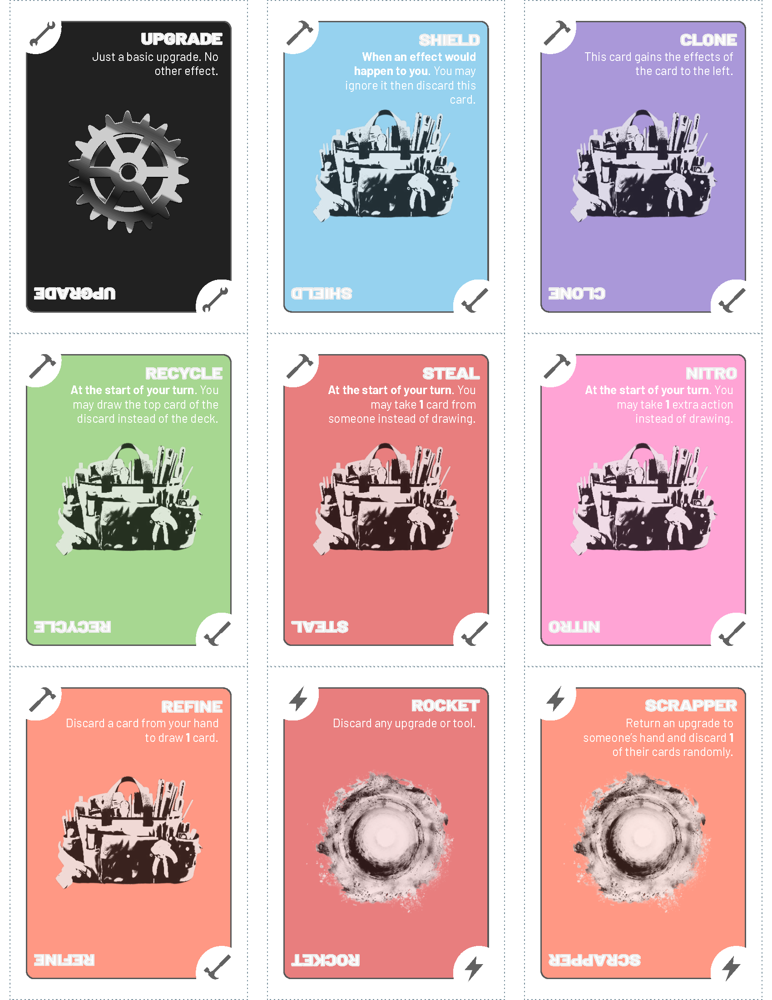
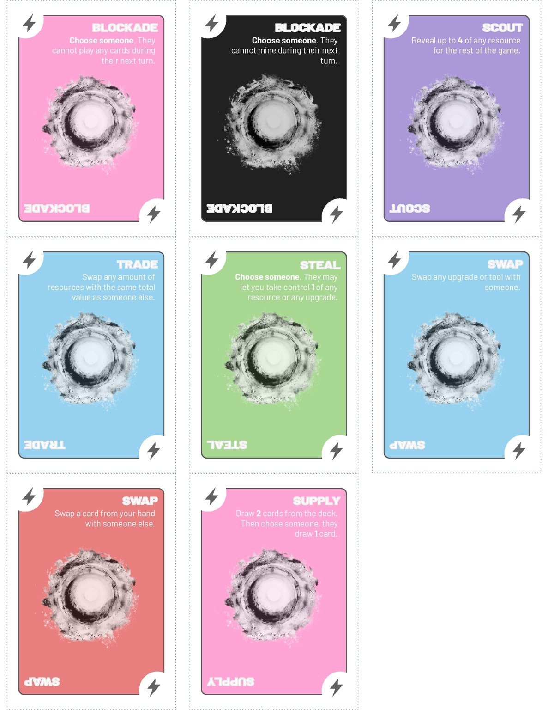

Role
Lead Designer and Creator
Featured work
These projects show how I think about systems: designing rules, testing mechanics, balancing outcomes, and learning from how real players interact with what I build.
Flagship case study

Original strategy card game • 2025
Meteor Mayhem is a multiplayer strategy card game where players mine resources from a meteor, upgrade their ships, and disrupt opponents through event cards and environmental hazards.
Lead Designer and Creator
Balance, risk/reward, resource management, decision-making
Completed playable prototype with custom cards, rules, and physical components
The design challenge
Meteor Mayhem started with that question. I wanted players to make meaningful decisions without removing the uncertainty that makes games exciting. The challenge was balancing planning, risk, luck, and player interaction so the game stayed competitive without feeling random.
Process

The project began with broad goals, research, and early planning through Life Design Lab.

I brainstormed mechanics, tested ideas, and removed concepts that made the game confusing or unbalanced.

Playtesting helped me see where players behaved differently than I expected, which changed how I balanced the system.
The system
Players collect resources with different values, creating choices about timing, risk, and scoring.
Ship upgrades affect mining strength, capacity, and long-term strategy.
Event cards let players disrupt, trade, block, or redirect the game state.
Hazards add pressure and uncertainty so players have to adapt.
The winner is determined by total resource value, not just who collected the most cards.
I modeled win probabilities based on deck composition and draw outcomes, then refined the game through testing.
Card design
I designed the cards to be readable during play, with consistent layouts, clear effects, and categories that helped players understand what each card was meant to do.

Resource values and hazard effects create tension between progress and disruption.

Upgrades support longer-term planning and different strategies.

Tools give players tactical options for defense, actions, and disruption.

Events change the game state and force players to adapt.
Reflection
Watching people play taught me more than designing alone. Real players used cards and strategies in ways I did not predict.
A mechanic can look fair on paper but feel frustrating during play. I had to think about both probability and player experience.
The game improved most when I was willing to change, simplify, or remove mechanics that were not working.
Other work

Exploring worldbuilding, player agency, and how simple mechanics can create different gameplay experiences.
In development: a Python game focused on gameplay logic, state management, and player interaction.
In development: modeling trading card game matchups, deck probabilities, and possible outcomes.